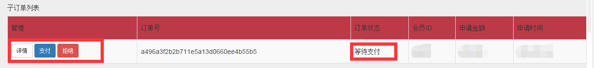
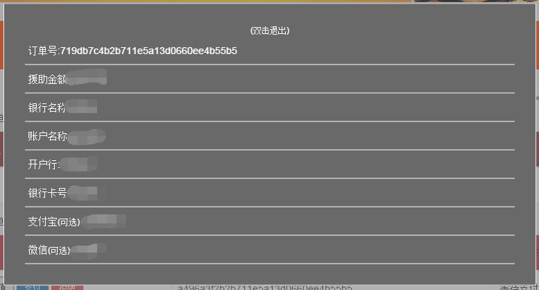
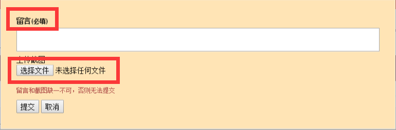
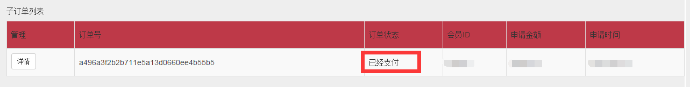
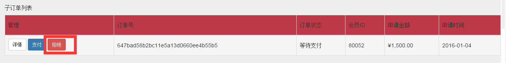
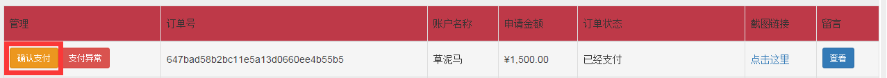

成功提交帮助请求之后，系统将会申请帮助请求的状态标志为 等待支付
点击 管理->详细 查看需要帮助的对象的详细信息
根据详细信息完成提供帮助后，单击 管理->支付 ,在留言中说明本次帮助的详细信息，并上传截图
成功提交之后，系统将更新状态为 已经支付,之后请耐心等待，接受帮助方的确认
如果你不想提供帮助,可以单击 管理->拒绝，来拒绝帮助， 拒绝帮助的玩家，将直接被系统封号！！
留言 和 截图 来确认否收到帮助， 如果确认已经收到帮助，请点击 管理->确认支付 来完成流程，否则 单击 管理->支付异常 进入异常处理流程，系统将会自动将异常订单标记为 支付异常，之后，由管理员来处理。
